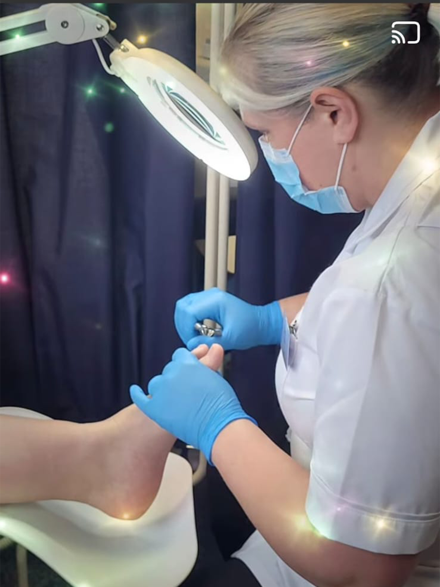
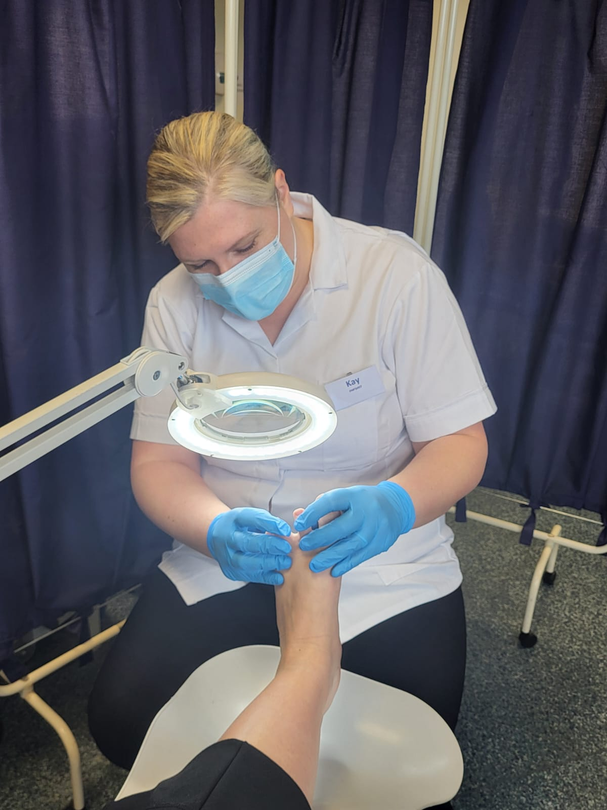

News & Campaigns
Featured articles written and reviewed by us!
Let Kay and the team at Fern Foot Care keep you a step ahead with the latest in foot health...
Read The Latest Fern Foot Care News
-

Foot Health Week National Awareness Campaign
by Kay Ferguson
March 2025
WHAT IS NATIONAL FOOT HEALTH WEEK? organised by the Royal College of Podiatry (RCPod), this annual public awareness campaign highlights real-life patient stories, showcasing the life-changing impact that foot health professionals have had on their patients' health and wellbeing.
-

Ten signs it's time to see a Foot Health Practitioner...
by Kay Ferguson
February 2025
OUCH, MY FEET HURT! Ten signs it's time to see a foot health practitioner include: persistent heel pain, noticeable swelling in the foot, numbness or tingling in the feet, ingrown toenails, bunions, nail fungus, difficulty walking due to foot pain, open wounds on the feet that aren't healing, significant changes in foot shape, or if you have diabetes and experience foot concerns...
-
Keeping clinical competencies up-to-date...
by Kay Ferguson
January 2025
THE CONSTANTLY EVOLVING FIELD OF FOOT CARE means that foot health practitioners must keep their skills up-to-date. New treatments, technologies, and research are emerging, and to ensure they can provide the best possible care to patients by diagnosing and treating foot conditions effectively, particularly for patients with complex medical needs like diabetes or vascular issues...
-
Dress for the job you want...
by Kay Ferguson
December 2024
NEW SCRUBS DAY Dressing in scrubs is important in healthcare settings because it helps prevent the spread of infections by providing a clean, easily washable uniform that minimizes cross-contamination between patients and healthcare workers, promoting hygiene standards and patient safety; additionally, the design of scrubs allows for easy movement and access to necessary tools during medical procedures....
-

Why basic footcare is not so basic after all...
by Kay Ferguson
November 2024
BASIC FOOTCARE IS IMPORTANT because it helps prevent pain, discomfort, infections, and falls by maintaining healthy skin on your feet, keeping nails trimmed, and wearing proper footwear, which is crucial for mobility and overall quality of life, especially for older individuals who are more prone to foot issues; neglecting foot care can lead to serious complications like injuries from falls due to poor balance...
-
"Hello! It's me Kay, your friendly Mobile Foot Health Practitioner"
by Kay Ferguson
October 2024
WHAT EXACTLY IS A FOOT HEALTH PRACTITIONER... I'm often asked are you a chiropodist, a podiatrist, a beautician? The answer is, well 'no'. A Registered Foot Health Practitioner is an individual that is qualified to carry out routine foot care treatments. Their services often include cutting and filing toenails and fingernails, corns and callus, preventing and treating fungal nail infections and carrying out general check-ups on feet...
-
We would love to hear your feedback
by Kay Ferguson
September 2024
WE WOULD LOVE TO HEAR YOUR FEEDBACK... Patient experiences are so important to us, they allow us to adapt and grow. They also let us celebrate our achievements and apologise when things haven't gone quite right.
Thank you, from Fern Foot Care